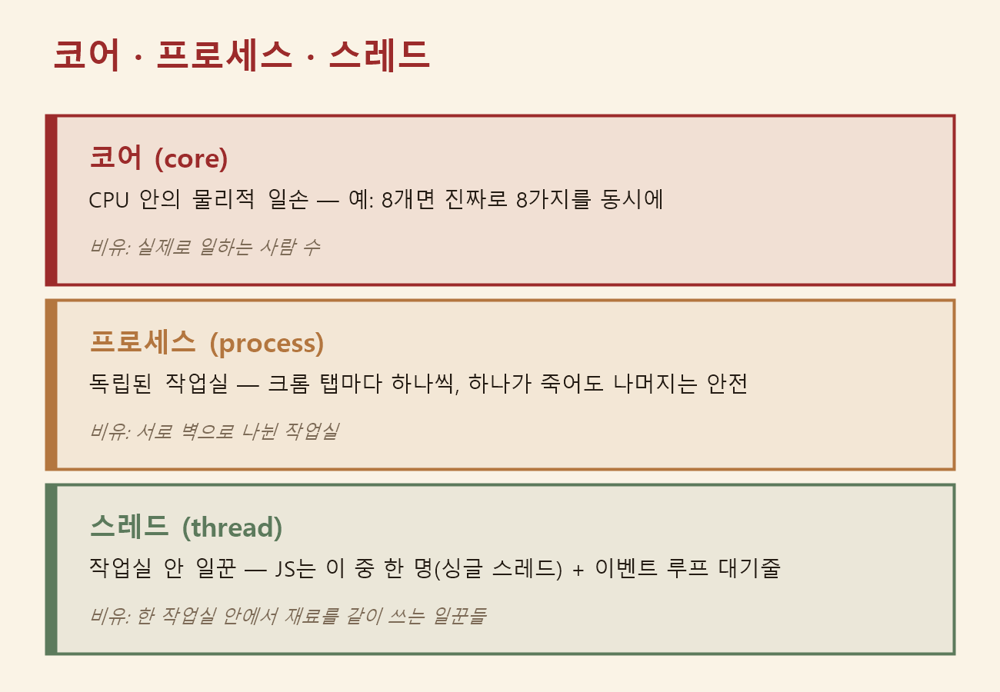
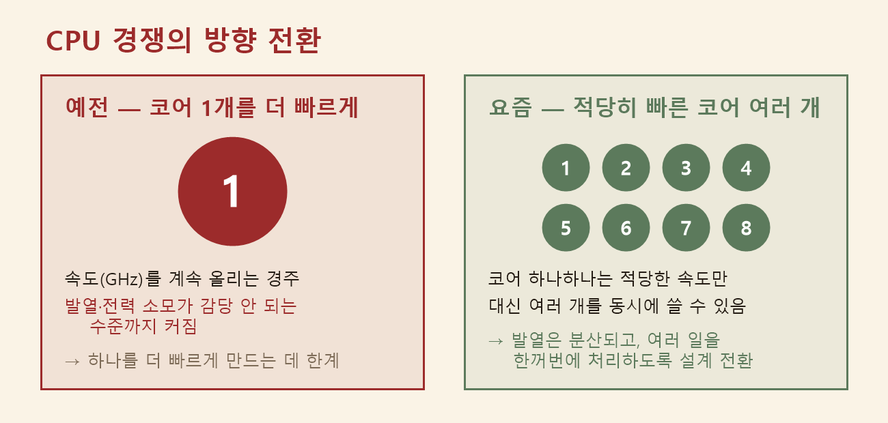
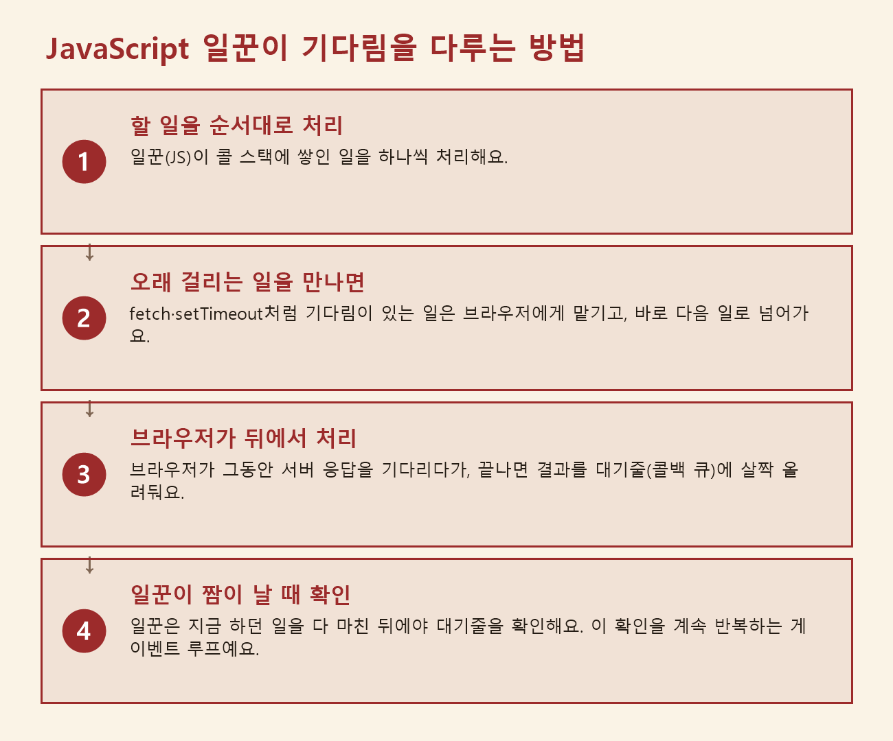
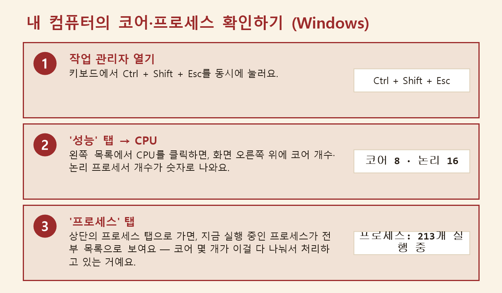

자바스크립트를 배우기 전에 알아야 할 컴퓨터 처리 원리(CPU·코어·프로세스·스레드·시분할) — 웹페이지 3계층 & 게임 만들기 (2)
2026. 7. 14.
※ 이 글은 모두의연구소 AI AIFFEL 과정에서 배운 내용을 제 나름의 언어로 재구성한 것입니다.
지난 글에서 궁금증 하나를 답으로 못 채우고 남겨뒀어요. 구글 지도는 손가락으로 지도를 끌고 있는 그 순간에도, 어떻게 새 지도 조각을 뒤에서 계속 받아올 수 있는 걸까요? 그 답을 찾아보려고 자바스크립트를 더 들여다봤는데, 갑자기 CPU·코어·프로세스·스레드·시분할 같은 운영체제 용어들이 쏟아져 나왔어요. "나는 자바스크립트를 배우는 건데, 왜 운영체제까지 알아야 하지?" 싶었는데, 알고 보니 Promise·async/await·이벤트 루프 같은 개념이 전부 "컴퓨터가 일을 처리하는 방식"과 그대로 연결돼 있었어요. 그래서 오늘은 꼭 필요한 만큼만 순서대로 정리해봤어요.
동기와 비동기 — 전화냐 문자냐
동기(synchronous)는 전화 통화예요. 상대가 받을 때까지 기다리고, 통화가 끝날 때까지 다른 일을 못 해요. 비동기(asynchronous)는 문자예요. 보내놓고 하던 일을 계속하다가, 답장이 오면 그때 확인해요.
카페에서 받는 진동벨이 딱 이 차이예요. 진동벨이 없으면 커피가 나올 때까지 카운터 앞에 서 있어야 하고(동기), 뒷사람 줄은 계속 길어져요. 진동벨을 받으면 자리로 가서 하던 일을 하다가 벨이 울릴 때 받으러 가면 돼요(비동기). 커피 만드는 시간 자체는 똑같아요. 달라지는 건 기다리는 동안 다른 일을 할 수 있느냐예요.
CPU와 코어 — 진짜로 계산하는 부품
자바스크립트 얘기를 하다 말고 갑자기 하드웨어까지 내려가는 게 뜬금없어 보일 수 있는데, 순서대로 보면 오히려 명확해져요. 제일 바깥에 있는 게 CPU(Central Processing Unit, 중앙처리장치)예요 — 컴퓨터에서 실제 계산을 도맡아 하는 부품이에요. 크롬을 켜든 카카오톡을 켜든, 결국 그 계산은 전부 CPU가 해요.
예전 CPU는 한 번에 딱 한 가지 계산만 할 수 있었어요. 요즘 CPU는 그 안에 코어(core)를 여러 개 갖고 있는데, 코어는 CPU 안에서 실제로 계산이 일어나는 자리 하나하나예요. 코어가 8개면 진짜로 8가지 계산을 동시에 할 수 있어요. 정리하면 CPU는 계산을 담당하는 부품 전체, 코어는 그 안에서 실제 계산이 벌어지는 자리예요.
프로그램과 프로세스, 그리고 스레드 — 은행 지점과 창구 직원
컴퓨터에 설치된 카카오톡은 그냥 하드디스크에 저장된 파일이에요 — 이걸 프로그램이라고 불러요. 그런데 이걸 실행하는 순간, 운영체제가 메모리를 할당하고 실행 공간을 만들어주는데, 이렇게 실행 중인 프로그램을 프로세스(process)라고 불러요.
그런데 프로세스 하나가 할 일이 한 가지뿐인 경우는 거의 없어요. 크롬만 해도 화면을 그리고, 마우스 입력을 받고, 서버에서 데이터를 받아오고, 영상을 재생하는 일을 동시에 해야 하거든요. 그래서 프로세스 안에는 스레드(thread)라는 더 작은 작업 단위가 여러 개 있어요.
이걸 수업에서 같이 듣는 분이 은행 창구에 비유해서 설명해줬는데, 들어보니 지금까지 중 제일 와닿아서 이 비유로 계속 정리해볼게요.
멀티프로세싱은 완전히 분리된 은행 지점 여러 개예요. 강남지점, 종로지점처럼 서로 독립된 지점이 각자 손님을 받아요. 각 지점은 자기만의 금고와 서류함(메모리)을 갖고 있어서, 강남지점 금고에 있는 돈을 종로지점 직원이 마음대로 못 써요. 지점끼리 뭔가 주고받으려면 팩스를 보내거나 전화를 해야 하고요(이게 프로세스 사이의 통신 비용이에요). 대신 강남지점에 불이 나도 종로지점은 멀쩡해요 — 크롬에서 탭 하나가 죽어도 다른 탭은 안전한 이유가 바로 이거예요. 다만 지점을 하나 새로 여는 건 돈도 시간도 많이 들어요.
멀티스레딩은 한 지점 안의 여러 창구 직원이에요. 강남지점 안의 1번, 2번, 3번 창구 직원은 같은 금고와 같은 서류함을 같이 써요. 그래서 협업이 빨라요 — 서류 하나를 옆 창구로 바로 건네면 되니까요. 문제는 1번 직원과 2번 직원이 동시에 같은 금고 서랍을 열려고 하면 꼬일 수 있다는 거예요. 그래서 "한 번에 한 명만 서랍 열기" 같은 규칙이 필요해져요.
계산이 오래 걸리는 일이 몰리면 지점을 늘리는 게(멀티프로세싱), 손님을 기다리게 하는 대기 시간이 긴 일이 많으면 창구 직원을 늘리는 게(멀티스레딩) 더 잘 맞아요.

CPU는 프로세스가 아니라 스레드를 실행한다
여기서 중요한 사실이 하나 있어요. CPU가 실제로 실행하는 건 프로세스가 아니라 스레드예요. 프로세스는 스레드들을 담고 있는 큰 지점 건물일 뿐이고, 코어는 그 안의 창구(스레드) 하나하나에 배정돼서 실제 계산을 해요. 그래서 "코어는 몇 개 안 되는데 스레드는 훨씬 많은데 어떻게 다 처리되지?"라는 질문이 자연스럽게 나와요.
코어보다 스레드가 훨씬 많은 이유 — 시분할
2000년대 초까지 CPU 경쟁은 "코어 1개를 얼마나 더 빠르게 만드느냐" 경쟁이었어요. 그런데 속도를 계속 올릴수록 발열과 전력 소모가 감당 안 되는 수준까지 커져버렸어요. 그래서 방향을 틀었어요 — 하나를 더 빠르게 못 만들면, 적당히 빠른 걸 여러 개 넣자. 그렇게 멀티코어 시대가 왔어요. (소프트웨어 엔지니어 허브 서터(Herb Sutter)는 2005년에 이 전환을 "공짜 점심은 끝났다"라는 글로 정리하기도 했어요.)

그런데 코어가 8개인 컴퓨터에서도 실행 중인 스레드는 수백 개예요. 코어 8개가 어떻게 수백 개를 다 처리할까요? 답은 운영체제가 아주 빠르게 번갈아 실행해주기 때문이에요.
숫자로 보면 왜 "번갈아 하기"가 필요한지 더 분명해져요. 자막 파일 A, B, C를 자동 검사하는 작업이 있는데 각각 10초씩 걸린다고 해봐요. 순서대로 하나씩 끝내고 넘어가면 A(10초)→B(10초)→C(10초)라서, C는 20초를 꼬박 기다려야 결과를 받아요. 그런데 A 조금→B 조금→C 조금→다시 A… 이런 식으로 아주 짧게 번갈아 실행하면, 세 파일 모두 조금씩 계속 진행돼서 어느 것도 20초씩 손 놓고 기다리지 않아요. 이렇게 아주 짧은 시간 단위로 번갈아 실행하는 방식을 시분할(time-sharing)이라고 불러요.
이 "번갈아 쓰기" 방식의 뿌리는 1960년대로 거슬러 갑니다. 당시 컴퓨터는 기관에 한 대뿐이라, 연구자들은 프로그램을 제출하고 결과를 몇 시간 뒤에 받았어요. MIT의 존 매카시(John McCarthy)는 컴퓨터가 여러 사람 사이를 아주 빠르게 오가며 각자가 "자기 컴퓨터를 독차지한 듯" 느끼게 하자고 제안했고, 페르난도 코르바토(Fernando Corbató) 팀이 CTSS라는 시스템으로 구현했어요. 덤으로, 여러 사람이 한 컴퓨터를 나눠 쓰게 되면서 서로의 파일을 구분할 장치가 필요해졌는데, 그렇게 태어난 게 지금 우리가 매일 입력하는 컴퓨터 비밀번호라고 해요.
코어가 많아져도 시분할은 계속 필요하다
그럼 코어가 많아지면 시분할이 필요 없어질까요? 아니에요. 코어가 8개인 컴퓨터에도 브라우저, 백신, 메신저, 음악 프로그램까지 합치면 스레드는 수백 개가 동시에 있을 수 있어요. 코어 8개, 스레드 수백 개인 상황은 아주 흔해서, 코어가 아무리 많아져도 시분할은 여전히 필요해요.
이게 자바스크립트와 무슨 관계일까 — 다시 이벤트 루프로
이제 처음 질문으로 돌아가볼게요. 자바스크립트는 기본적으로 하나의 스레드에서만 실행돼요(싱글 스레드) — 위에서 설명한 "한 지점 안 여러 창구" 구조에서, 자바스크립트는 딱 하나의 창구 자리만 쓴다는 뜻이에요. 창구라는 자리 자체가 자바스크립트로 만들어졌다는 뜻이 아니라, 자바스크립트 코드가 그 자리 하나만 차지하고 돌아간다는 뜻이에요.
그런데 일꾼이 한 명인데 동기 방식으로만 일한다면 어떻게 될까요? 버튼 클릭을 처리하는 코드가 서버 응답을 3초간 기다리며 서 있으면, 그 3초 동안 화면 전체가 멈춰버려요. 스크롤도 안 되고 다른 버튼도 안 눌리고, 재생되던 영상까지 멈춰요. 사이트에서 버튼 누른 뒤 화면이 통째로 굳어버린 경험이 있다면, 그 일부가 바로 이 문제였어요.
그래서 자바스크립트는 오래 걸리는 일을 비동기로 처리해요. 서버에 데이터를 요청하거나(fetch), 시간을 재놓을 때(setTimeout), 요청만 걸어두고 곧바로 다음 일로 넘어가요. 무거운 일은 브라우저가 뒤에서 대신 처리하고, 끝나면 결과를 대기줄에 올려놔요. 한 명뿐인 일꾼은 지금 하던 일을 마친 뒤에 그 대기줄을 확인해서 결과를 처리하는데, 이 대기줄을 계속 돌리는 구조를 이벤트 루프(event loop)라고 불러요. 글로만 보면 헷갈릴 수 있어서, 이 네 단계를 그림으로 정리해봤어요.

재밌게도 이 "페이지를 새로고침 안 하고 서버와 데이터를 주고받는" 핵심 부품은 원래 1990년대 말 마이크로소프트의 아웃룩 웹메일 팀이, 웹메일을 데스크톱 프로그램처럼 만들려고 개발한 거였대요. 열흘 만에 태어난 언어(지난 글의 JavaScript)와, 경쟁사가 전혀 다른 목적으로 만든 부품이 몇 년 뒤 구글 지도에서 만나 꽃을 피운 셈이에요. 그래서 AI가 만든 코드에서 async, await, setTimeout, .then(...) 같은 단어를 보면, "아, 여기는 기다리지 않고 걸어두는 부분이구나"라고 읽을 수 있으면 충분해요.
내 컴퓨터로 확인해보기 (Windows)
이 개념이 실감 나게, 제 컴퓨터에 코어가 몇 개고 프로세스가 몇 개나 떠 있는지 직접 확인해봤어요.

(macOS라면 터미널에서 sysctl -n hw.ncpu를 치면 코어 수가 나와요.) 코어는 몇 개 안 되는데 프로세스는 그 몇십 배가 떠 있는 걸 직접 보니, 시분할이 실제로 이렇게 열심히 일하고 있었구나 싶었어요.
오늘 배운 것 정리
| 개념 | 한 줄 설명 |
|---|---|
| CPU | 컴퓨터에서 실제 계산을 수행하는 부품 |
| 코어(core) | CPU 안에서 계산이 실제로 일어나는 자리 |
| 프로그램 | 하드디스크에 저장만 되어 있는 실행 파일 |
| 프로세스(process) | 실행 중인 프로그램 — 독립된 은행 지점 하나 |
| 스레드(thread) | 프로세스 안에서 실제 코드를 실행하는 작업 단위 — 지점 안 창구 직원 |
| 운영체제(OS) | 어떤 스레드가 코어를 쓸지 순서를 정하는 관리자 |
| 시분할(time-sharing) | 여러 스레드가 코어를 아주 짧은 시간씩 번갈아 쓰는 방식 |
| 자바스크립트 | 기본적으로 창구(스레드) 하나만 쓰지만, 브라우저와 협력해서 여러 일을 동시에 하는 것처럼 동작하는 언어 |
이해를 확인해보려고, 오늘의 프로젝트인 "게임 만들기"에 맞춰 이런 문제를 스스로 만들어봤어요. 다음 중 비동기로 처리해야 할 일은 어느 쪽일까요?
A. 캐릭터가 점프 버튼을 눌렀을 때 화면 속 위치를 위로 옮기기
B. 게임이 끝났을 때 서버에 내 기록을 저장하고 전체 순위표를 받아와 보여주기
답은 B예요. A는 컴퓨터 안에서 즉시 끝나는 계산이라 기다림이 없지만, B는 네트워크를 왕복해야 해서 언제 끝날지 모르는 기다림이 있어요. 기다림이 있는 곳에만 비동기가 필요해요. A까지 비동기로 만들 필요는 없어요 — 비동기는 공짜가 아니라, 코드의 실행 순서를 읽기 어렵게 만드는 비용이 있기 때문이에요.
오늘 배운 동기·비동기 구분은, 결국 지난 글의 JavaScript가 "동작(무엇을 누르면 무엇이 바뀌는지)"을 맡는다는 이야기와 그대로 이어져요. 그 계층 안에서도 "즉시 바뀌는 것"과 "기다렸다가 바뀌는 것"이 나뉘어 있었던 거예요.
"웹페이지 3계층 & 게임 만들기" 시리즈
(2) 자바스크립트 배우기 전에 알아야 할 컴퓨터 처리 원리(CPU·코어·프로세스·스레드·시분할) (이 글)
※ 앞으로 이어질 교시는 발행되는 대로 이 목록에 추가할게요.